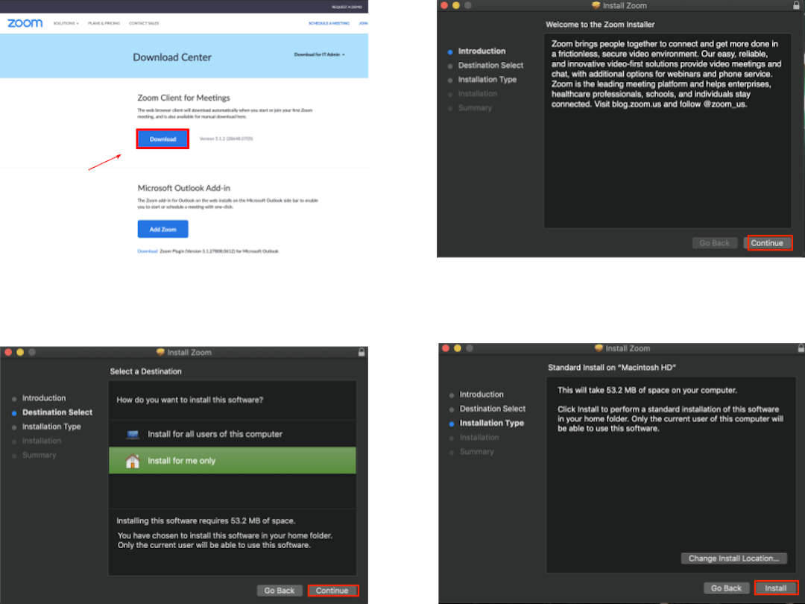
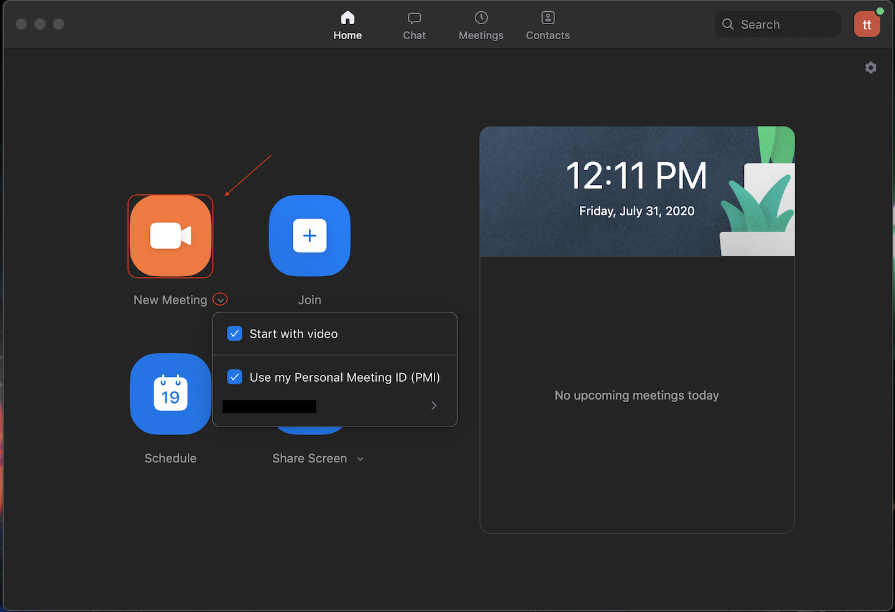
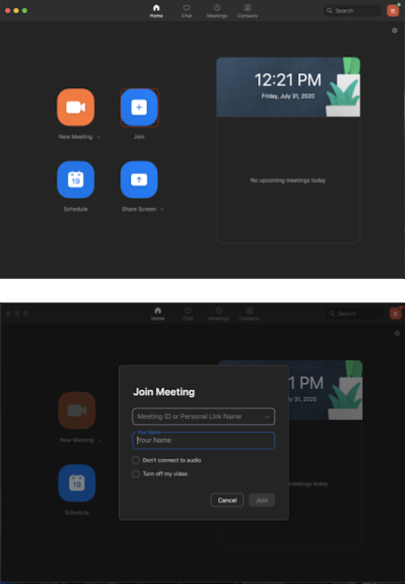
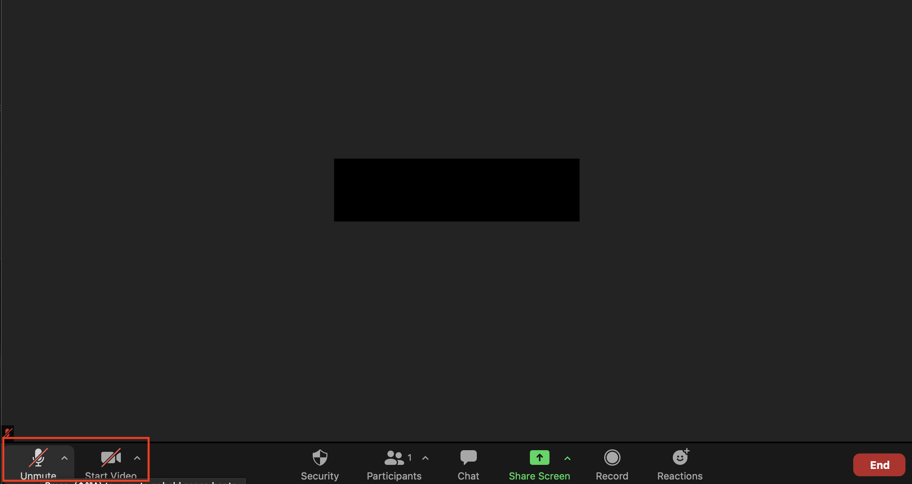
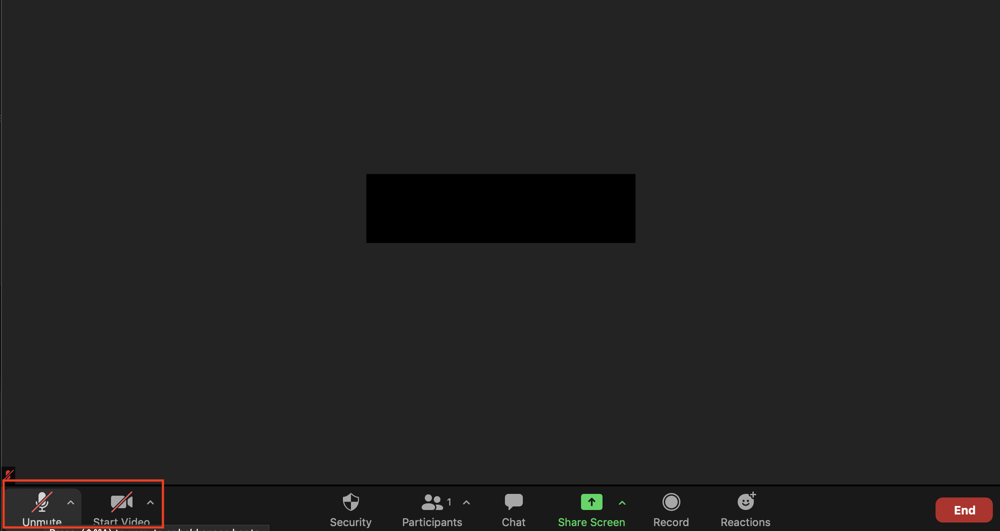
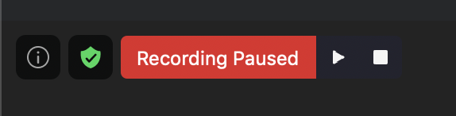
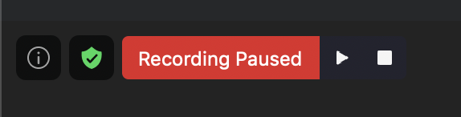
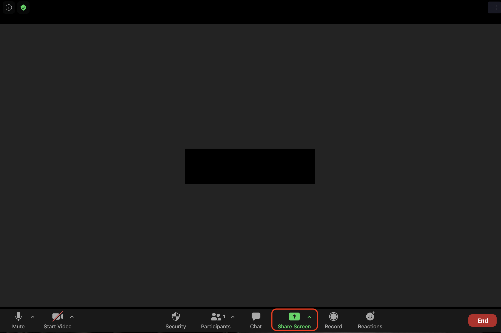
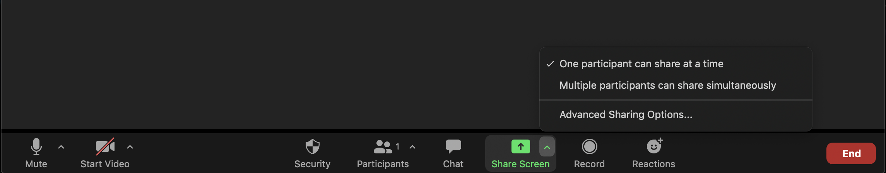
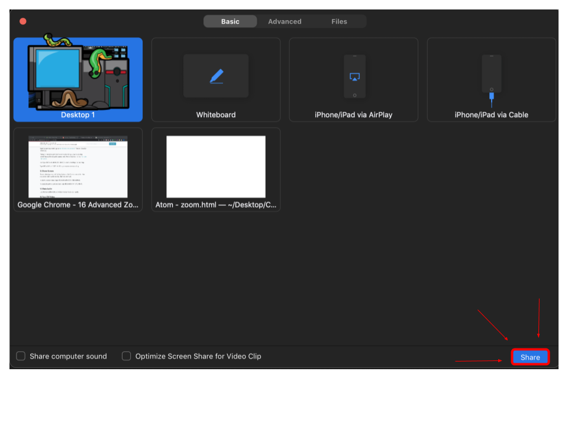

¿Qué es Zoom?
Zoom es una herramienta que se utiliza para videoconferencias. Esto permite que grandes grupos se vean a través de un video, se comuniquen y compartan pantallas, todo desde sus hogares.

Registrate en Zoom
Paso 1: Vaya a zoom.us/signup
Paso 2: Te pedirá que ingreses tu fecha de nacimiento. A menos que seas mayor de 16 años, no eres elegible para crear una cuenta a menos que sea para la escuela
Paso 3: A continuación, te presentará las opciones para registrarse. Ingrese tu correo electrónico del trabajo / escuela (el personal también funciona bien)
Paso 4: También puedea crear una cuenta presionando 'iniciar sesión con (Google, Facebook)'. Si eligea esta opción, vaya al paso 8
Paso 5: Si ingresaste su dirección de correo electrónico, Zoom enviará un correo electrónico a ti. Haga clic en el botón que dice 'activar cuenta'
Paso 6: Se abrirá una página en su navegador web que te preguntará si se estás registrando en nombre de la escuela. Contesta sí o no.
Paso 7: Desde allí, ingrese tu apellido y la contraseña deseada para Zoom.
Paso 8: Te preguntará si deseas invitar a otras personas a unirse a Zoom. Puedes omitir esa página o invitar a otros.
Paso 9: Finalmente, le dará la URL de tu reunión personal y tendrás la opción de hacer clic en un botón que dice "comenzar la reunión ahora". Si haces clic en el botón, le pedirá que bajes la aplicación Zoom.
¡Felicidades! ¡Estás registrado!
Va a zoom.us/signup
Bajando a Zoom
Paso 1: Vaya a zoom.us/download
Paso 2: Esto te llevará a una página con opciones para bajar la applicación. Haga clic en el botón de bajar debajo de 'Zoom Client for Meetings'
Paso 3: Si haces clic en la descarga en la parte inferior de su página web, abrirá una ventana emergente. Haga clic en 'continuar', el destino (generalmente 'solo para este usuario'), luego 'instalar'
Congrats! You've installed Zoom
Baja Zoom en este sitio: zoom.us/download

Organizando Una Junta
Es posible organizar una junta de Zoom si has bajado la aplicación. Si no lo has hecho, vaya a la sección anterior y siga los pasos
Paso 1: Abre la aplicación en tu computadora e inicie sesión en tu cuenta.
Paso 2: Haga clic en la flecha hacia abajo en la sección 'iniciar junta'. (Es un botón naranja)
Paso 3: Marque 'comenzar con video' y 'usar mi identificación de reunión personal' y luego envíe la identificación a aquellos que desees en el Zoom.

Uniendose a una Junta
Al unirse a una junta, lo más probable es que el anfitrión le envíe un enlace o un código
Paso 1a (enlace): cuando sea el momento de unirse a la llamada, haga clic en el enlace.
Paso 2a (enlace): Te unirás automáticamente a la llamada o te colocarás en una sala de espera, donde esperes hasta que el anfitrión te deje entrar.
Paso 1b (código): Si te envían un código, abre la aplicación de zoom.
Paso 2b (código): Haga clic en el botón que dice 'unirse a la junta' e ingrese el código que se le proporcionó. También puedes escribir tu nombre en el que se mostrará al unirse a la llamada.

Apagando y Encendiendo tu Microfono y Cámara
En la parte inferior de la pantalla de una llamada, hay varias opciones. Dos de ellos son el micrófono y el video. Una es una imagen de un micrófono y la otra es una cámara que dice "video" debajo.
Para apagar su video, haga clic en el botón que dice video. De esta manera, nadie podrá verte. Si deseas volver a encenderlo, vuelva a hacer clic en él.
Para que la gente no pueda escucharte, haz clic en el botón del micrófono. Para volver a encenderlo, haz clic en él nuevamente.
 

Funciones extra
Retoque facial
Paso 1: Abre la aplicación Zoom y haga clic en el engranaje pequeño en la esquina superior derecha (configuración)
Se abrirá una pantalla con diferentes opciones. Haga clic en la sección titulada 'video'. Estas son configuraciones que editarán el video tuyo que otros ven.
Una función útil de esta sección es que obtiene una vista previa de su video. Esto puede ser bueno para ver antes de unirse a una llamada. En la imagen donde hay una caricatura es donde aparecerá tu video.
En la sección titulada "mi video", puede hacer clic en "retocar mi apariencia". Esto simplemente suaviza tu rostro retocando tu video.

Grabación de Juntas
Una vez que esté en una junta, hay una opción en la parte inferior de la pantalla que dice 'grabar'
Una vez que presiones este botón, comenzará a grabar todo lo que está sucediendo en la junta.
En la esquina superior izquierda, hay una opción que le permitirá pausar / detener y reiniciar el video. Todo lo que tienes que hacer es presionar el símbolo de pausa.
Después de la llamada, el video se descargará automáticamente en tu computadora y también estará visible en la pestaña 'grabaciones' de su aplicación de zoom.
 

Compartiendo Tu Pantalla
En la parte inferior hay una opción que dice 'compartir pantalla'. Si eres el anfitrión, automáticamente tendrás la opción. De lo contrario, el anfitrión tiene que darte permiso para compartir tu pantalla.
Presiona el botón que dice "compartir pantalla". Al anfitrión se le ofrecerán opciones, como permitir que solo una persona comparta la pantalla, etc.
A continuación, se abrirá una ventana que te preguntará qué deseas compartir. Algunas de las opciones son tu escritorio, aplicaciones que tiene abiertas (como Chrome, Safari), una pizarra, etc. Haga clic en una de estas.
Una vez que has elegido lo que deseas compartir, haga clic en el botón que dice "compartir" en la esquina inferior derecha.
Para iniciar una pantalla compartida, escriba ⌘Cmd + Shift + S (PC: Alt + Shift + S).
Para pausar una pantalla compartida, escriba ⌘Cmd + Shift + T (PC: Alt + T).


